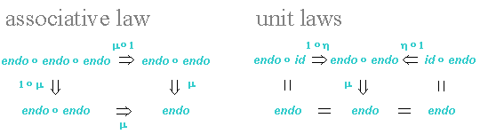

This document gives an introductory discussion of the IFF Namespace
for Term Languages
(IFF-TRM). The axiomatization
is given separately.
The
central concept in the term namespace is the Lawvere construction (see the red
sub-diagram in Figure 1). The Lawvere construction is a small category
that serves as the framework for FOL logic and its categorical logic
extension. In the IFF approach, First
Order Logic (FOL) is factored into two main components, the "term
component" and the "expression component", plus a third extensional
component called the "equational component". The Lawvere category is a
parametric construction based upon the notion of a FOL language (signature or lexicon).
Objects in the
Lawvere category, called indicia,
are subsets of variables. Morphisms in the Lawvere category are
term tuples, which are
set-theoretic versions of term sequences. At the base level, any
function between indicia is a term tuple, performing the operations of
projection and duplication (copy). Composition in the Lawvere category
is tuple substitution.
Identity in the Lawvere category is indicia set function identity.
.
| var |
variable set |
elem |
element – variable
as term |
|
| ftn |
function (symbol)
set |
∈ | embedding – function as term | |
| ℘ | power set operator |
# | function arity |
|
| case |
indicia-member pair set |
proj |
case projection |
|
| indic | case indication | |||
| trm |
term set |
# | term arity | |
| var × trm |
variable-term pairs |
π1, π2 | indexed-term projections |
|
| {-} | singleton – term as tuple | |||
| ftn ⊗ tpl |
function-tuple substitutable
pairs |
subst | tuple substitution into function | |
| trm ⊗ tpl |
term-tuple substitutable pairs |
subst | tuple substitution into term | |
| tpl | tuples (of terms) | # | tuple arity | |
| § | tuple index | |||
| tpl ⊗ tpl | tuple-tuple substitutable pairs | o | lawvere composition | |
| var ο ℘ | indicia (subsets of variables) set | 1 |
lawvere identity (indicia as
tuple) |
Figure 1: Basic Term Functors and Natural
Transformations
The architecture of term languages is illustrated in Figures 1 and 2. Figure 1 illustrates the basic architecture, and Figure 2 represents the term tuple coproduct architecture. Figure 1 consists of three sub-diagrams – the term sub-diagram (upper left), the term tuple sub-diagram (lower left) and the lawvere sub-diagram (right). The term sub-diagram illustrates the fixpoint solution for terms, the term tuple sub-diagram illustrates the embedding structures for term tuples, and the lawvere sub-diagram illustrates the Lawvere construction. The fixpoint solution for terms embeds variables (variable cases) as elementary terms and substitutable function-tuple pairs as composite (substitution) terms. Function symbols are embedded as atomic terms and indexed-terms are embedded as singleton term tuples. The Lawvere category of a term language has indicia as objects, term tuples as morphisms, and substitution as composition. The Lawvere construction is a collection of (small) categories and functors indexed by term languages and term language morphisms. Abstractly, the Lawvere construction is a (small) category object in the (large) category of functors and natural transformations between the categories Trm-Lang and Set.
The
nodes in Figure 1 represent
basic functors from Trm-Lang
the
category of term languages and term language morphisms to Set
the category of (small) sets and set functions. The edges in Figure 1
represent natural transformations between these basic functors. There
are five
simple functors var, ftn, case,
trm and tpl, for variables, function
symbols,
variable cases, terms and term tuples, respectively. The first three
are basic
and the
last two are inductively defined. Based on these, there are five
composite functors: var ο ℘,
var × trm,
ftn ⊗ tpl,
trm ⊗ tpl,
tpl ⊗ tpl,
for
indicia (variable subsets),
indexed terms (variable-term pairs), substitutable
function-tuple
pairs, substitutable
term-tuple pairs and composable tuple-tuple pairs,
respectively. The ‘⊗’ symbol
refers to a matched Cartesian product –
the arity of the first (function, term or tuple) matches the index of
the second (tuple).

| ∅ | initial Lawverian
indicia |
|||
| 0 |
counique term tuple |
|||
| var ο ℘ × var ο ℘ | indicia pair | ind1, ind2 |
indicia pair
projections |
|
| + | binary Lawverian coproduct | |||
| tpl ⊕ tpl | tuple-tuple pairable pairs | op1st, op2nd |
tuple pair
projections |
|
| [,] | tuple (co)pairing |
Figure 2: Term Tuple Coproduct Functors and Natural Transformations
The nodes in Figure 2 represent
coproduct functors from Trm-Lang
to Set. The edges in Figure 2
represent natural transformations
between these coproduct functors.
These are the various functors and natural
transformations associated with the coproduct structure of Lawvere
categories and
functors. There is a
simple functor tpl for
term tuples. As mentioned before, this is inductively defined. There
are two
composite functors:
var ο ℘
and tpl ⊕
tpl,
for
indicia and pairable tuple pairs, respectively. The ‘⊕’ symbol
refers
to a fibered Cartesian product – the arity of the two term tuples must
match.
Any of the natural transformations in
Figures 1 and 2 must satisfy naturality conditions. Take for example
the term arity natural transformation
# : trm ⇒ var ο ℘ : Trm-Lang → Set
whose source category is the category
of term languages Trm-Lang,
whose target category is the category of
sets Set, whose source
functor is the term functor trm : Trm-Lang → Set, whose target functor is the
indicia functor var ο ℘ : Trm-Lang → Set, and whose Lth
component is the term arity function #(L) : trm(L) → ℘var(L) for any term
language L.
Then, for any term language morphism f : L1 → L2,
term arity must satisfy the commuting diagram trm(f) · #(L2) = #(L1) · ℘var(f), which
represents two conditions: (1) the naturality
condition of the term arity natural transformation for the term
language morphism f,
and (2) the
fact that term language morphism f preserves term
arity. A similar
assertion can be made for any of the natural transformations
in Figures 1 and 2; and this is axiomatized in this namespace. In
addition, a third condition holds for any of the Lawvere-related
natural transformation axiomatized in this namespace. Take for example,
the tuple arity natural transformation
# : tpl
⇒ var ο ℘ : Trm-Lang → Set
whose Lth component is the tuple arity function #(L) : tpl(L) → ℘var(L) for any term language L. Then, for any term language morphism f : L1 → L2, tuple arity must satisfy the commuting diagram tpl(f) · #(L2) = #(L1) · ℘var(f), which represents three conditions: (1) the naturality condition of the term arity natural transformation for the term language morphism f, (2) the fact that term language morphism f preserves term arity; and (3) the fact that the Lawvere functor preserves target (arity).

| endo | term monad
endofunctor |
η | term monad unit |
|
| μ | term monad
multiplication |
Figure 3: Term Monad Functors and Natural Transformations
In universal algebra, the notion of a free algebra is associated with
an
endofunctor that assigns to any set the set of elements of the
corresponding free algebra. This endofunctor comes equipped with two
natural transformations that give it a "monoid"-like structure called a
monad – one natural transformation embeds a set (thought of as
variables) as terms and the other natural transformation is the free
interpretation or action on the given set. This association between
free algebra constructions and monads can be abstracted and generalized
– any adjunction gives a monad, which itself is an alternate but
related adjunction. In fact, in this sense adjunctions, monads and
their interconnections abstractly algebracize Galois connections,
closure operators and their interconnections. A similar construction
exists for terms in FOL. The abstract
algebraic structure of the term construction is
concentrated in the term monad
(Figure 3)

Figure 4: The Term-Tuple Fixpoint Solution
Terms and term tuples are corecursively defined. This specification replaces the traditional recursive tree-forest set fixpoint equations
(where ‘A’
is the parameter set, ‘≅’ denotes bijection in particular or
isomorphism in general, ‘1’
denotes a generic singleton set, ‘+’ denotes disjoint union, and
‘×’ denotes Cartesian product, and ‘stack(-)’ is the stack
operator which is itself a fixpoint solution) with the recursive
term-tuple set fixpoint equation pair
(where ‘case(L)’ denotes the
set of cases, variables-with-arity, or indicia-contained-variable
pairs, ‘ftn(L)’ denotes the
set of function symbols, and ‘⊗’
denotes the combinator for
function-tuple pairs that
requires a match between function arity to
tuple index). Categorically, the term-tuple set pair is the fixpoint
solution (Figure 4)
for the ω-continuous endofunctor fixpt(L)
:
Set ×
Set → Set × Set on the
category Set
× Set
defined by
fixpt(L)(〈X,
Y〉)
= 〈case(L) + ftn(L)⊗Y,
tpl(X)〉.
The abstract syntax of FOL terms is
parametric: there is a name for
the parameter language or lexicon ‘L’ and also a
name for FOL terms ‘trm(L)’. There is a
collection of synthetic/constructor operators, a collection of
analytic/selector partial operators and axioms that relate the two
collections.
There is a collection of two synthetic/constructor injective
operators on FOL
terms:
(where the element operator 'elem(L)' embeds
variables as terms, and the substitution operator, aka the application
operator, ‘subst(L)’ substitutes
term tuples into function symbols; in other words, applies function
symbols to term tuples). The coproduct copairing of these two functions
is the resolution bijection
The substitution operator is extendible to composition in a Kleisli-like term category.
There is a collection of analytic/selector
operators on FOL terms
with the two subgroup clusters in one-one correspondence with the two
synthetic/constructor operators (their inverse):
where the boolean operator ‘is-elemL’ is for the elementary term domain, the indicia partial operator ‘indL’ selects the indicia component of an elementary term, and the variable partial operator ‘varL’ selects the variable component of an elementary term.
where the boolean operator ‘is-compL’ is for the composite term domain, the function symbol partial operator ‘ftnL’ selects the function component at the top of a composite term, and the tuple partial operator ‘tplL’ selects the tuple component underneath the top of a composite term.
These operators satisfy the defining FOL term abstract data type
semantics: there are axioms for the elementary and composite operators.
which states that any FOL term constructed by the element operator is elementary and is decomposable into the indicia (subset of variables) and variable components
which states that every elementary FOL term is constructible using
the element operator from its index and variable components.
which states that any term constructed by the substitution operator is composite and is decomposable into the original function symbol and term tuple.
which states that every composite FOL term is constructible using the substitution operator from the (substitutable) pair of its components.
The SUO-IFF documents contain many unicode characters, and so require a recent browser. But even some recent browsers fail to render SUO-IFF properly. You can test your browser here.